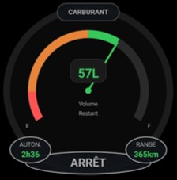
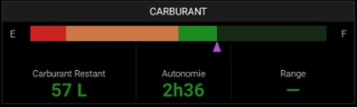

Possibilités
- Niveau de carburant avec zones colorées : rouge (jusqu'à la réserve), orange (réserve → 50%), vert (50% → plein).
- ANLCRB : cadran à aiguille façon altimètre + volume restant (litres) au centre. L'arc de progression couvre un rayon plus grand (0,72 r) pour une meilleure lisibilité.
- NUMCRB : barre pleine largeur + curseur violet, et trois colonnes Carburant restant (L) / Autonomie (h:mm) / Range (km). Les marges autour des libellés E et F sont élargies.
- Autonomie = carburant ÷ consommation ; Range = autonomie × vitesse sol (affiché au-dessus de ~30 km/h).
- Alerte réserve : notification unique dès l'entrée en réserve de sécurité.
- Pastille de titre affichée en haut du cadran (masquable via Options ▸ « Masquer le titre »).
Gestes supportés
Appui long : ouvrir la saisie du carburant embarqué (pavé numérique, bouton « Plein », puis Démarrer le suivi ou Arrêter).
Double-tap : —
Note
- Capacité réservoir, consommation et réserve viennent de la fiche appareil (défauts : 91 L, 22 L/h, 30 min).
- Pendant le suivi, le carburant décroît en temps réel selon la consommation.

